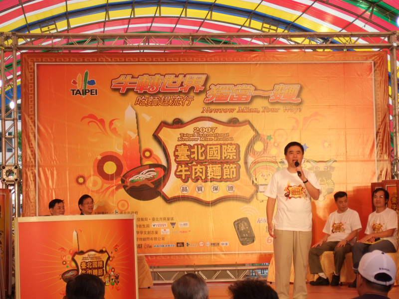

Activies

With great location and well-managed, no matter the government or the privity contiune hold events at XinYi Resident Recreation center since it established. Big events that are held by the government recently:
1. Taipei International Beef Noodle Festival in 2007. Since 2005, the Taipei City Office of Commerce holds "Taipei International Beef Noodle Festival" annually to activate local industries and promote city tourism. And the third edition of Taipei International Beef Noodle Festival ,which was on November 3th and 4th, 2007, was held in XinYi Resident Recreation center. And the theme of the year to the event is "cattle to the world, take charge independently " (Rythm in Chinese)
This festival event is splendid and rich, has "the Challenge Ox Demon King Contest", "International Interflow Competition", "Essay Contest about The Beef Noodles and I", "Mother private recipe", " secret beef Noodles vote", "Happy Moment ", " Beef Noodles Carnival ", " Fuliful Disdes Contest", "TOP Beef Noodle vote"," Best partner-pairing", "Culture Food Lecture"...and so on.
2. Taipei City Government held an big exhibition to celebrate the 10th anniversary of XinYi Resident Recreation Center from September 18th to 25th, 2011. The exhibition divided into four parts, from past, present to the future. Let the public acquiant 44 South Village from a brand-new sight. And other Resident Recreation Center also planned the special day for a series of activities, such as the the public theater ,creative market or handmade workshop.
In addition, XinYi Resident Recreation Center also held "Colorful XinYi Resident Recreation Center - Village painting together" as another exhibition topic to promote cultural creation and the local tradition. Since 2011, Taipei City Government held sketch contest for students with the topic about the architecture, humanities and the scene of XinYi Resident Recreation Center.
3. "Taipei Village Cultural Festival" for the promotion of village culture, Taipei Office of the Culture holds the festival every year since 2006. And XinYi Resident Recreation Center always plays an important role every time. For example, in 2007, it held the forum which invited professors and experts to discuss the issues about "What is the ideal and value of the village culture under modern city ", "What's village culture - the meaning of the special culture", and "What is the preservation of village culture." In 2009, be the mainly place to " Experience Village amorous feelings, walk through old village ". In 2010, tailored set up the stage drama by using the Residents Recreation as the background without building the stage, and were also held at XinYi Residents Recreation in 2012 and 2013 as well. In 2012, to welcome the Dragon Lunar year coming, even organized the special event ,called "Dragon to the Taipei Village Culture Festival", including Beijing opera performances, crosstalk performances, village film, village gourmet King PK, village chess, village children game aftertaste, Theme lectures, and the story of an elephant Linwang in his life as a veteran's clone. From February 22nd to March in 2013, Taipei Office of the Culture held "sentimentally attached to Taipei 2013 Village culture Festival" at the XinYi Residents Recreation. To this time, the festival is to perform the historical relic, pictures, and door plates mainly based on the development of the village in Taipei. Bring the public into back into the past of 44 South Village.
With the activities, "window grilles, lanterns, sandbags workshop", the village musical "Wish, and memories" by the Stonetheatre, "Eating sweets for a good year--the Lantern Festival dumplings Feast", "Dumpling Competition", playing and making historical child's toy, ethnic custom experience and so on. During the exhibition, major of Taipei City, Mr. Huo and the administrator of Taipei Office of culture, Mr. Liu shake rice dumplings with five different colors which has the symbol to the luck with the public. In addition, the organizers also designed 4 commemorative medals with free limited postcards and providing the delivery service.
At the same time of the exhibition, "44 South Village, 74th" where creative artists Mr. Li Liqun had lived in before was simulated. Mr. Li Liqun even specially recorded stand-up comedy talking about his childhood which was played at the exhibition. By series of the variety and fascinating activities, people have a deeper recognition about this unique settlement, the military village and its special history.
4. Regular activities, for example, "44 South Village simple market" which has operated for a long time open on every Sunday afternoon. With the slogan, "Love life, go to the market" and organize different theme of fairs in Central Plaza to attract specific groups. Letting people meet directly with farmers by "agriculture-learning lecture" not only to buy fresh fruits and vegetables in a natural way, but also the process of planting and the farmers ' feelings about the land.
In addition, there are second-hand market called" Second-love", at the central square twice a month, which often begin at 12 o'clock. Numebers of teenagers carry luggages with their collections, including cameras, books, old-fashioned shoes, plain shirts, or variety of collections. Before the market started, there has already filled with people. The purpose of the second-hand market is to convey the concept that "recycling makel less waste".